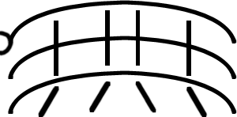

	<body>
		<div class="container">
    		<div class="blurb">
				<h1>Charles Wu</h1>
				
				<p>Welcome to my home on the internet.</p>
				<p>Wubashi is a neologism combining languages and meaning. <A href="http://www.chinese-word.com/data/3214.html">Wu (無) homonym of my surname (吳)</A> and <a href="https://en.wiktionary.org/wiki/橋">bashi</a> or &quot;bridge&quot;. In short this is a bridge to connect with me. I chose <i>bashi</i> since my trusty bicycle is a Bridgestone which in Japanese is ishibashi. The logo is the Chinese character for nothingness shaped as a foot bridge. </p>
    		</div><!-- /.blurb -->
		</div><!-- /.container -->
	</body>
